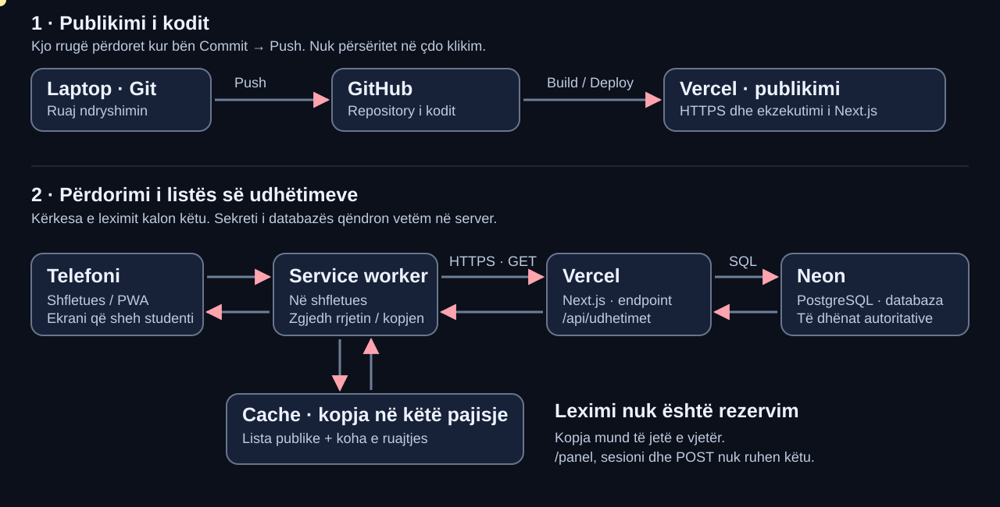

Ligjërata 6 · PWA (Progressive Web App) dhe puna offline
22.10.2026 · 45 minuta për grup · Shigjetat ← → kalojnë slajdet; Esc shfaq të gjitha.
JAVA 6 · 22.10.2026 · 0–3 MIN · 1 / 20
Arta humb internetin në autobus
Ajo e ka hapur RideShare më parë dhe po kërkon udhëtimin drejt AAB.
Çfarë duhet të shohë tani, në vend të një ekrani bosh?
VAZHDIMI · 3–5 MIN · 2 / 20
RideShare që kemi ndërtuar
- J3 · Ekranet
- J4 · Të dhënat
- J5 · Lejet
- J6 · Pa internet
Java 3 solli listën dhe detajet. Java 4 i lidhi me Neon.
Java 5 shtoi hyrjen dhe kontrollin e pronarit. Java 6 shton leximin pa internet.
SYNIMET · 5–6 MIN · 3 / 20
Çfarë do të kuptosh sot
- Në lexim
- Mund të shfaqet kopja e fundit.
- Në veprim
- Nuk shpikim sukses kur serveri nuk përgjigjet.
Do të shpjegosh çfarë shtojnë manifesti, service worker dhe cache.
Do të dallosh kopjen nga databaza dhe API-në (Application Programming Interface – ndërfaqe programimi) që kthen listën.
ILUSTRIMI · 6–9 MIN · 4 / 20
Harta e infrastrukturës së Javës 6

Sipër: kodi publikohet. Poshtë: përdoruesi kërkon listën.
Kopja ruhet në shfletuesin e kësaj pajisjeje; Neon mbetet burimi i të dhënave.
ANIMACIONI · 9–13 MIN · 5 / 20
Ndiqe listën, hap pas hapi
Hap animacionin në ekran të plotë ↗
Zgjidh “Me internet”, pastaj “Pa internet”. Ndale te cache.
Parashiko: cili komponent nuk mund të arrihet kur lidhja humbet?
DY RRUGË · 13–15 MIN · 6 / 20
Publikimi dhe leximi janë rrugë të ndryshme
- Publikimi
- Git → GitHub → build/deploy në Vercel
- Leximi
- Telefon → service worker → Next.js → Neon
Push dërgon kodin e ri në GitHub dhe nis publikimin në Vercel.
Hapja e listës dërgon një kërkesë te aplikacioni; nuk e bën Push kodin.
KONCEPTET · 15–18 MIN · 7 / 20
PWA: aplikacion web që mund të instalohet
- Manifesti
- Emri, ikonat, adresa e nisjes dhe pamja standalone.
- Service worker
- Ndërmjetësi në shfletues që trajton kërkesa të caktuara.
- Cache
- Kopja lokale e përgjigjeve të lejuara.
PWA (Progressive Web App – aplikacion web progresiv) përdor aftësi të shfletuesit për një përvojë aplikacioni.
Instalimi dhe puna offline janë aftësi të ndryshme; një ikonë në telefon nuk provon që lista është ruajtur.
Burime zyrtare
nextjs.orgMETADATA · 18–20 MIN · 8 / 20
Manifesti i jep identitet aplikacionit
- src/app/manifest.ts
- Emri + ikonat
- Shfletuesi ofron instalimin
RideShare AAB ka emër, dy ikona PNG dhe mënyrën e hapjes standalone.
Mënyra e instalimit ndryshon sipas pajisjes dhe shfletuesit. Në laborator e verifikojmë manifestin; nuk presim patjetër një popup.
A e ruan manifesti listën e udhëtimeve?
Jo. Manifesti përshkruan aplikacionin. Ruajtjen e listës e bën service worker me Cache API.
Burime zyrtare
nextjs.orgNDËRMJETËSI · 20–22 MIN · 9 / 20
Service worker jeton në shfletues
- Telefoni kërkon
- Service worker vendos
- Rrjeti ose kopja
Service worker e kap kërkesën GET (lexim) para se ajo të kalojë në rrjet.
Në këtë laborator ruan një dokument offline dhe listën publike. Nuk ekzekuton SQL dhe nuk mban sekretin e Neon.
A është service worker një server shtesë në Vercel?
Jo. Është një skript i shfletuesit. Serveri Next.js mbetet në Vercel; në laborator punon në localhost.
Burime zyrtare
developer.mozilla.orgKUFIJTË · 22–24 MIN · 10 / 20
Çfarë lejojmë të ruhet?
- Ruajmë
- GET /api/udhetimet, offline.html, dy ikona
- Nuk ruajmë
- /panel, /api/auth, email, cookie, POST
Ruajmë vetëm listën publike dhe faqen e thjeshtë që e lexon.
Hyrja, paneli, profilet dhe kërkesat që ndryshojnë të dhëna kalojnë gjithmonë te serveri.
A duhet të ruajmë gjithë faqen e panelit për lehtësi?
Jo. Mund të përmbajë të dhëna private. Ky ushtrim ka një listë të kufizuar skedarësh publikë që lejohen.
NETWORK-FIRST · 24–27 MIN · 11 / 20
Së pari serveri, pastaj kopja
- Provo serverin
- Kërko listën e tanishme.
- Në sukses
- Shfaq përgjigjen dhe përditëso kopjen.
- Në dështim
- Lexo kopjen e fundit; nëse mungon, shpjegoje.
Provojmë rrjetin për të marrë listën e tanishme. Një përgjigje e mirë përditëson kopjen dhe kohën.
Në dështim lexojmë kopjen e fundit. Nëse kopja mungon, shpjegojmë se duhet një vizitë me internet.
Burime zyrtare
developer.mozilla.orgSHEMBULL · 27–29 MIN · 12 / 20
Ora në kopje mund të jetë e vjetër
- Telefoni offline
- 08:15 · ruajtur në 13:00
- Neon tani
- 08:25 · ndryshuar në 13:05
Në 13:00 Arta ruan listën: nisja 08:15. Në 13:05 shoferi e ndryshon në 08:25.
Në 13:10 Arta është offline. Në kopjen e saj ende lexohet 08:15.
Cila orë është gjendja e tanishme e udhëtimit?
08:25 në databazë. Pa e arritur serverin, Arta duhet ta trajtojë 08:15 si informacion që mund të jetë i vjetër.
GJENDJET · 29–31 MIN · 13 / 20
Tri pamje që duhet t’i dallosh
- Nga serveri
- Lista u lexua tani; ruajmë kohën e re.
- Nga cache
- Lista e fundit; shfaqim kohën e vjetër.
- Pa kopje
- Hape një herë me internet.
Mesazhi në ekran shpjegon prej nga erdhën të dhënat.
Mungesa e një kopjeje nuk mbulohet me rreshta të shpikur ose konfirmim të rremë.
LEXIMI DHE VEPRIMI · 31–33 MIN · 14 / 20
Shikimi i një karte nuk rezervon vend
Cache mund të tregojë “1 vend”, edhe kur ai vend ndërkohë është zënë.
Në lexuesin offline, “Kërko vend” është i çaktivizuar. Nuk krijojmë radhë automatike rezervimesh në këtë javë.
Pse nuk e shfaqim “Rezervimi u konfirmua” menjëherë?
Nuk kemi përgjigje të serverit dhe nuk dimë gjendjen aktuale. Hyrja dhe lejet e Javës 5 ende kërkohen kur bëhet veprimi real.
PËRGATITJA · 33–35 MIN · 15 / 20
Vizita e parë kërkon internet
- Hape me internet
- Ruaj kopjen
- Provoje pa internet
Shfletuesi duhet të marrë service worker, dokumentin offline dhe listën para se të humbet lidhjen.
Cache mund të fshihet nga përdoruesi ose shfletuesi. Nuk është kopje rezervë e databazës.
Pse shoku me të njëjtin link nuk e ka kopjen time?
Cache është në shfletuesin dhe pajisjen tënde. Nuk shpërndahet nga një telefon te tjetri.
RIKTHIMI · 35–37 MIN · 16 / 20
Lidhja rikthehet: pyete sërish serverin
- Lidhja duket aktive
- GET te serveri
- Përgjigjja e re
- Ora e re në ekran
Treguesi “online” nuk garanton që Vercel ose Neon përgjigjen.
Shtyp “Rifresko listën”. Vetëm një përgjigje e suksesshme zëvendëson kopjen.
Burime zyrtare
developer.mozilla.orgDISKUTIMI · 37–40 MIN · 17 / 20
Parashikojeni në çift
Njëri është telefoni, tjetri serveri. Shpjegoni rrugën pa përmendur kodin.
Skenari: telefoni ka kopje 08:15, serveri ka 08:25, por serveri përkohësisht nuk përgjigjet.
ZBATIMI · 40–42 MIN · 18 / 20
I njëjti vendim në biznesin tënd
- Mund të lexosh
- Menu, përshkrim shërbimi, listë publike
- Kërkon konfirmim
- Porosi, termin, vend i lirë
Një restorant mund të shfaqë menunë e ruajtur, por çmimi ose disponueshmëria mund të ndryshojë.
Një shërbim mund të shfaqë orarin e fundit, por nuk duhet të konfirmojë një termin pa server.
URA TE USHTRIMET · 42–44 MIN · 19 / 20
Çfarë do të provosh në laborator
- Ndërto
- Provo tri gjendje
- Ruaj raportin
- Dorëzo në GitHub
Nga i njëjti projekt shton manifestin, ikonat dhe lexuesin offline me kodin e dhënë.
E provon me DevTools në 375 px: vizitë online → offline → rifreskim → rikthim lidhjeje.
MBYLLJA · 44–45 MIN · 20 / 20
Shpjegoje me një fjali
“Kur Arta humb internetin, RideShare shfaq …, sepse …”.
“Para se të besoj se një veprim u krye, duhet të marr …”.
Cili është dallimi kryesor i kësaj jave?
Leximi i një kopjeje na ndihmon pa internet; suksesi i një veprimi kërkon përgjigje dhe verifikim në server.